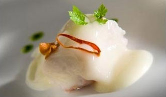

Recetas de cocina
Merluza al pil pil

Lista de ingredientes
- 800g de merluza
- 3 dientes de ajo
- 1 guindila
- 1 dl de aceite de oliva 0,4º
- 1 rama de perejil
- Agua
- Sal
Pasos a seguir:
- En primer lugar hacemos un caldo cociendo las espinas y la piel de la merluza en agua con sal. Pasados unos 10-15 minutos, lo colocamos y lo ponemos a reducir al máximo.
- En un cazo, ponemos 2 ajos, la pimienta y el perejil con aceite de oliva. Aquí cocinamos la merluza con un poquito de sal.
- En otro recipiente, echamos aceire de oliva, lo calentamos y añadimos laminas de ajo muy finas. Cuando se doren, las sacamos y reservamos el aceite.
- En un bol, colamos el caldo de pescado y lo dejamos enfriar un poco. Batimos y cuando emopiece a hechar espuma, vamos añadiendo el aceite atemperado sin dejar de batir con la varill. Lo ponem9os a punto de sal y salaseamos sobre el pescado cocinado al vapor. Colocamos encima el ajo, las guindillas y el perejil.
Ir a la receta original